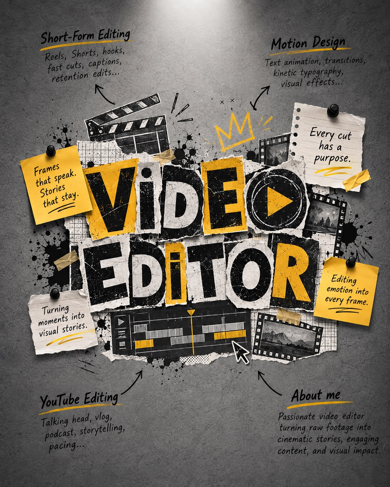

01 / 00:31
Scalebucks
Short-form vertical
Video editing, motion, and color for brands that want people to stop scrolling and feel something.
I’m RAIKO, an independent video editor focused on story, rhythm, motion, and color.
I shape raw footage into clear, attention-holding edits for creators and brands. I care about the choices viewers feel: where a sequence begins, when the pace changes, and which frame deserves more time.
A quick map of the stories, motion, and formats I shape—revealed like a fresh sheet pulled from the edit room wall.

02A EDITORIAL MAP / SHORT-FORM · MOTION · YOUTUBE
Three selected vertical edits. Press play to watch the real work, with sound and full controls.
The software changes. The goal stays the same: a clean story, intentional pace, and a polished final frame.
Story edits, pacing, sound, and final delivery.
Motion graphics, animated type, and compositing.
Color balance, shot matching, and finishing.
Play or scrub the timeline to move through a simple Hook → Build → Payoff structure.
We define the audience, goal, footage, references, and deadline.
I create the first cut, then refine pace and structure around your feedback.
Motion, sound, and color bring the final piece together for delivery.
Tell me what you’re making, who it’s for, and when you need it.